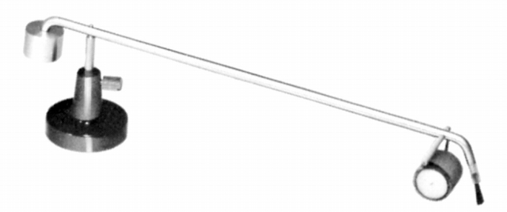
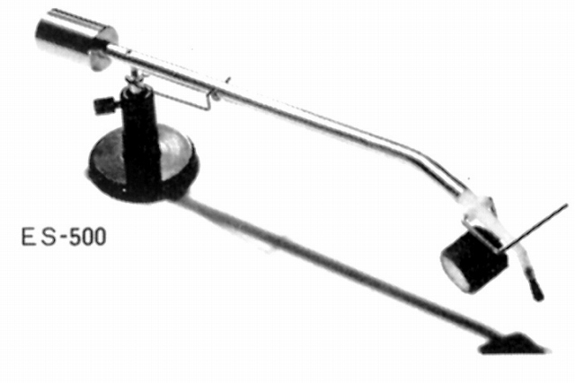
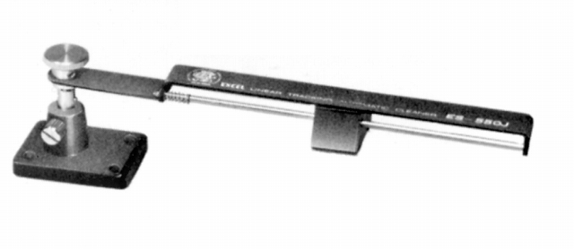
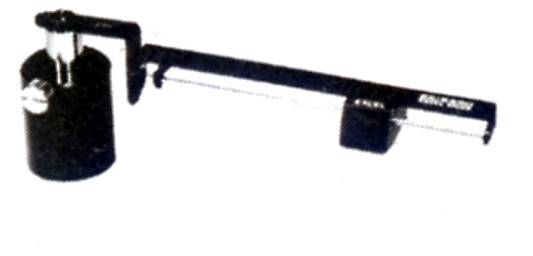
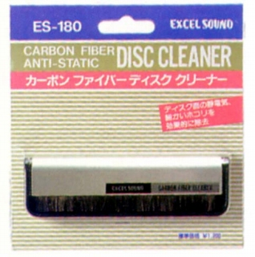
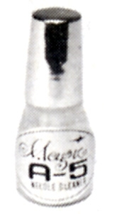
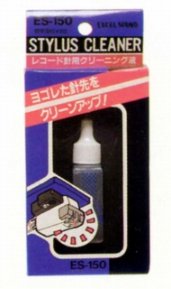

クリーナー
レコード・クリーナー
レコードの盤面清掃用。トーンアーム状の自動タイプとカーボンブラシの除電タイプがある。
ES-300F

■価格 900円
■備考 ブラシとローラで清掃。
全長210�o、実効長185�o
高さ調節可能。
ES-500

■価格 1,100円
■備考 ブラシとローラで清掃。
全長245�o、実効長200�o
高さ調節可能。
ES-550J

■価格 1,700円
■備考 トラッキングパッドの水平移動で清掃。
リニアトラッキングタイプ
高さ調節可能。
静電除去作用あり。
ES-660D

■価格 1,900円
■備考 トラッキングパッドの水平移動で清掃。
リニアトラッキングタイプ
高さ調節可能。
実効長120�o。
同社のアーム型クリーナーでは最初に消えたモデル。
ES-180

■価格 1,200円
■備考 カーボンファイバー・ブラシタイプ。
静電除去及びゴミの吸着。
スタイラスクリーナー
A-5

■価格 600円
■備考 1970〜80年代の製品。
ES-150

■価格 600円
■備考 1990年代の製品。